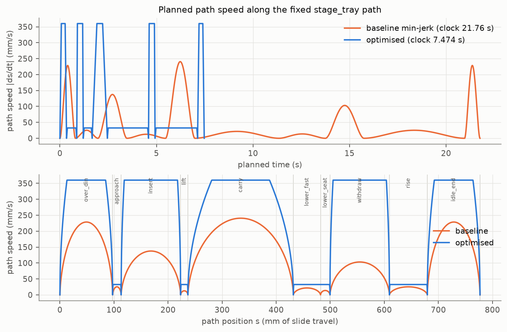

Evidence and limitations
Preprint · Not peer reviewed
Suneet Dungrani · Independent Researcher · suneetdungrani@utexas.edu
Section references are to the research paper. See the technical supplement for evidence classes, reproduction instructions and detailed outcomes.
Geometry checks
Section 5.1 compares known-answer cases with distinct feature-local and whole-part scoring targets. The checker outcomes show the different abstention behavior and scoring targets.

Agent-assisted design repair
Section 5.2 reports held-out results from budget-matched template repair. The outcomes by task family and revision counts describe the observed differences. Richer feedback showed no established superiority.


Fixture placement
Section 5.3 reports 96/100 and 100/100 successes under the simulated reference approach. The lead-in redesign changed two features together. Their individual effects were not estimated.
Gantry motion and transfer
Section 6 reports planned motion of 21.760 s versus approximately 7.474 s, excluding settling and hold. In the paired simulations, 59/100 baseline and 58/100 optimized attempts achieved a complete transfer. Both profiles left the tray unseated in 40/100 trials. The original timing target has conflicting clock definitions in the historical records. The visual comparison shows only the two measured plan durations. The other unsuccessful outcomes were kit displacement in 1/100 baseline trial and 2/100 optimized trials.

Modeled production
Section 7 reports conditional contrasts across the model's fixed scenarios. The modeled dispatch contrast exceeds the mechanical-only contrast. These are modeled good-unit counts within an empirical envelope.